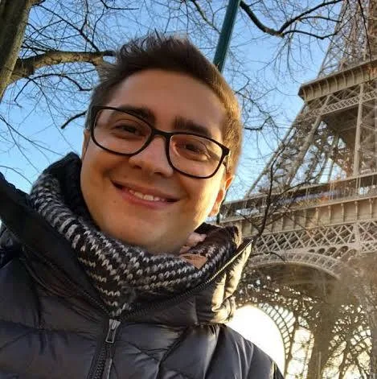

Clique, e descubra mais sobre o nextstage
Formado em Gastronomia pela Universidade Anhembi Morumbi, estabeleceu-se como um youtuber no ano de 2011 em seu canal "EDGE", sigla para Electronic Desire Gamers Entertainment. Seu primeiro vídeo foi de Minecraft, mas foram jogos co-op e de terror, como Slender: The Eight Pages, Amnesia: The Dark Descent e Dead Space 2, que impulsionaram seu reconhecimento em 2012. Após renomear seu canal para "alanzoka", iniciou sua carreira na Twitch e começou a gravar vídeos de Five Nights at Freddy's e Fortnite.
Em 2015, participou da 1ª temporada do torneio Legends of Gaming Brasil da MTV juntamente com outros youtubers[9] e, em 2016, integrou a seleção brasileira de Overwatch, atendendo pelo nickname "Nextage".